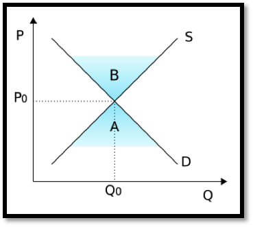

We will start this chapter with a review of linear functions, which are common in business. In business there are quite a few examples of linear equations. We start by reviewing some standard concepts related to lines, including the slope.
Following the conventions of microeconomics, we will often use the variables q and p, for quantity and price, rather than x and y. We will also follow the conventions of economics in treating quantity as the independent variable. (The q-axis will be the horizontal axis. A fast web search for supply and demand equilibrium will convince you this standard usage.)
Subsection1.1.1Equations of a line
From prior courses, such as college algebra, you will remember that lines can be written in several different forms. If we are given the slope and the \(y\)-intercept, the slope intercept form will be the equation of choice. If we are given a point and a slope, it might be faster if we use the point-slope form of a line.
Kinds of Linear Equations.
\(y=m x+b\)
the slope-intercept form of a line
\(y-y_0=m(x-x_0)\)
the point-slope form of a line
In a business setting we are likely to use \(q\) instead of \(x\) and \(p\) instead of \(y\text{.}\)
With this notation these standard equations of a line become:
\(p=mq+b\)
the slope-intercept form of a line
\(p-p_0=m(q-q_0)\)
the point-slope form of a line
Example1.1.1.Supply and Demand Curves.
Supply and demand equations are often modeled by linear equations. The supply function is a line with a positive slope, and the demand function is a line with a negative slope.

Figure1.1.2.The intersection of a supply and demand curve
The vertical axis shows the price, the horizontal axis shows quantity. Both supply (S) and demand (D) are linear functions. In this diagram ‘B’ denotes a surplus of supply, and ‘A’ denotes a surplus of demand.
Recall, that the slope of a line through the points \(P_0=(q_0,p_0)\) and \(P_1=(q_1,p_1)\) is given by:
There are two other forms of a line that are sometimes used. The general form of a line is a standard notation used in mathematics. The 2-point form of a line is very handy in those situations where we are not given a slope, but we are given information about two points that lie on the line.
\(a x+b y+c=0\)
The general form of a line
\(y-y_0=\frac{y_1-y_0}{x_1-x_0 }(x-x_0)\)
The 2-point form of a line
As above, in the setting of this course we may be using \(p\) (price) and \(q\) (quantity) as our variables. This would result in equations that look as follows:
\(a q+b p+c=0\)
The general form of a line
\(p-p_0=\frac{p_1-p_0}{q_1-q_0 }(q-q_0)\)
The 2-point form of a line
Example1.1.3.Finding four versions of a line.
We find that we can sell 150 widgets a day if we sell them at $10. If we raise the price to $15, we can only sell 110 widgets a day. Assume that there is a linear relationship between price and quantity sold. Find the equation of the line in all four forms.
Solution.
Writing this using our variables \(p\) (price) and \(q\) (quantity of widgets) we see that when \(p = 10\text{,}\)\(q = 150\) and when \(p = 15\text{,}\)\(q = 110\text{.}\) Points are (usually) given as \((q,p)\text{,}\) so this means we have two point \((150,10)\) and \((110,15)\) on the line. We always need to find the slope of the line, and in this case
We just found the slope and we just need to pick a point \((p_0,q_0)\) to finish the problem. (Recall that \(p\) and \(q\) are the variables, so we want to leave those as they are.) In this case lets pick \((p_0,q_0)= (150,10)\text{.}\) Then we get this simplified version, which is also the point-slope form of this line.
Suppose that a linear cost-quantity relationship exists in producing widgets. There is a fixed cost of $400. There is also a per-unit cost of $11.
Find the equation of the line.
Find the cost of making 200 widgets.
Solution.
We have one point of the form (quantity, cost) at (0, 400) from the fixed cost. This point happens to be an intercept. The slope of the line is \(m=11/1=11\text{.}\) We will let \(C\) stand for Cost and \(q\) stand for quantity. The general formula for a line with these variables will have the form
\begin{equation*}
C=m q+b.
\end{equation*}
In this example \(m = 11\) and \(b = 400\text{,}\) hence the equation of the line is
\begin{equation*}
C=11 q+400
\end{equation*}
Using the equation form part a) we see that the cost of producing 200 widgets is
Sarah is paid $500 for working up to 40 hours per week. For work beyond 40 hours per week she is paid $18/hour.
Find the equation of the line.
How much is she paid if she works 56 hours in a week?
What is she paid for working 30 hours in a week?
Solution.
For this example we will use “designer variables”, longer variables that make the equation easier to read. The output will be Pay, and the input variable — the number of hours worked — will be hrs. We are told that Pay = 500 when hrs = 40. The slope of the line for work beyond 40 hours is \(m=18\text{.}\) Another way to think of this is to say that there is a fixed Pay of $500 and a variable Pay for any hours in excess of 40: i.e. (hrs - 40). Thus, the equation of the line, according to the point-slope form is
The pay for working 56 hours is 18(56-40)+500=$788.
The pay for working 30 hours is $500. This is a trick question part of the problem. From the text of the problem, the linear model only works for overtime, with a flat rate applying to less than 40 hours per week. Comment: The function should be written as a piecewise defined function.
This question is all about the function \(f\) defined by
It can be useful when writing reports to have variables that convey some meaning. We could have used \(y\) for \(\operatorname{Pay}\text{,}\) and \(x\) for \(\operatorname{hrs}\text{,}\) but using the much more easily interpreted variables named Pay and hrs helps when reading the formulas.
Reading Questions1.1.2Reading Check
1.Reading check, Linear Functions and Models.
This question checks your reading comprehension of the material is section 1.1, Linear functions and models, of Business Calculus with Excel. Based on your reading, select all statements that are correct. There may be more than one correct answer. The statements may appear in what seems to be a random order.
In this class we will sometimes use \(q\) and \(p\) instead of \(x\) and \(y\text{.}\)
\(y=mx+b\) is often referred to as the general form of the line.
\(y=mx+b\) is often referred to as the slope-intercept form of the line.
The demand function is a line with a positive slope.
If they are not labeled, there is no way to tell which is the supply curve and which is the demand curve.
\(y-y_1=m(x-x_1)\) is often referred to as the point-slope form of the line.
The supply curve has a positive slope.
The slope can be defined as rise over run.
None of the above
Exercises1.1.3Exercises 1.1 Linear Functions and models
Exercise Group.
Given two points in the \((q,p)\) plane and a value \(q_0\text{:}\)
Find the slope of the line determined by the points.
Give the equation of the line determined by the points.
Give the value of \(p\) predicted for \(q_0\) by the line.
1.
Points \((2,5)\) and \((6,17)\text{,}\) with \(q_0=4\text{.}\)
Hint.
Find the slope and use the point-slope form
Solution.
First find the slope: \(m= \frac{\text{change in }p}{\text{change in }q}
= \frac{17-5}{6-2}=\frac{12}{4}=3\)
Next we find the equation of the line. There are several ways to do this and two methods are outlined below.
Method 1: use the point-slope equation: \(p-p_0=m (q-q_0)\text{.}\) We can choose either one of the points, so in this case we will find the line using the point \((q_0,p_0 )=(2,5)\text{.}\) This gives the equation \(p-5=3 (q-2)\text{.}\)
Rewrite this as \(p=3q-1\)
Method 2: use the slope- intercept equation \(p=m q+b\text{.}\) Use \((q,p)=(2,5)\) and \(m = 3\) and solve for \(b\text{:}\)\(5=3 (2)+b\text{.}\) And solving for \(b\) we have that \(b= -1\text{,}\) and hence \(p=3q-1\)
Evaluate at the given point. \(p(4)=3*4-1=11\)
2.
Points \((5,7)\) and \((10,7)\text{,}\) with \(q_0=20\text{.}\)
3.
Points \((20,10)\) and \((40,5)\text{,}\) with \(q_0=12\text{.}\)
Solution.
Just as in problem 1 we find the slope and then find the equation of the line.
First find the slope: \(m= \frac{\text{change in }p}{\text{change in }q} = \frac{5-10}{40-20}=-\frac{5}{20}=-\frac{1}{4}\)
Using \(p=m (q-q_0)+p_0\) with \((q_0,p_0 )=(20, 10)\) and \(m = -\frac{1}{4}\text{,}\) we get \(p=-\frac{1}{4}(q-20)+10\text{.}\) Solving for \(p\) we get \(p =-\frac{1}{4}q+15\text{.}\)
Evaluate at the given point. \(p(12)=-\frac{1}{4}(12)+15=12\text{.}\)
4.
Points \((5,62)\) and \((115,783)\text{,}\) with \(q_0=415\text{.}\)
5.
Points \((273,578)\) and \((412,6)\text{,}\) with \(q_0=309\text{.}\)
Solution.
Just as in problem 1 we find the slope and then find the equation of the line.
First find the slope: \(m= \frac{\text{change in }p}{\text{change in }q} = \frac{578-6}{273-412}=-\frac{572}{139}\)
Using \(p=m (q-q_0)+p_0\) with \((q_0,p_0 )=(412, 6)\) and \(m = -\frac{572}{139}\text{,}\) we get \(p=-\frac{572}{139}(q-412)+6\text{.}\) (We can combine the constant terms — the \(6\) and the \(-\frac{572}{139}*(-412)\text{,}\) but leaving the equation in this form is acceptable.)
Evaluate at the given point. \(p(309)=-\frac{572}{139}(309-412)+6 =-\frac{572}{139}(-103)+6=429\frac{119}{139}\)
6.
Points \((509,17)\) and \((211,132)\text{,}\) with \(q_0=4\text{.}\)
Exercise Group.
For the following problems, start with the information given:
Give the equation of the line determined by that information.
Using the line, give the predicted value of \(p\) for the given \(q_0\text{.}\)
Give the value of \(q\) for which the predicted value of \(p\) is \(0\text{.}\)
7.
A slope of \(3\text{,}\) passing through \((6,3)\text{,}\) with \(q_0=4\text{.}\)
Solution.
Using \(p=m q+b\text{,}\) we get \(3=3 (6)+b\text{,}\) so \(b= -15\) and the equation of the line is \(p=3 q-15\text{.}\)
If \(q_0=4\text{,}\) then \(p=3 q-15=3(4)-15= -3\)
The predicted value of \(p\) is \(0\text{,}\) when \(0=3 q-15\text{.}\) Solving for \(q\) we get \(q=5\text{.}\) [Comment: in part a) we could have used the point-slope for as well.]
8.
A slope of \(-2\text{,}\) passing through \((2,-5)\text{,}\) with \(q_0=3\text{.}\)
9.
A slope of \(12.7\text{,}\) passing through \((22,183)\text{,}\) with \(q_0=46\text{.}\)
Solution.
Using \(p=m (q-q_0 )+p_0\) we get \(p=12.7 (q-22)+183\text{.}\)
When \(q_0=46\text{,}\) we get that \(p=12.7 (46-22)+183=12.7(24)+183\text{.}\) And hence \(p=487.8\text{.}\)
The predicted value of \(p\) is \(0\text{,}\) when \(0=183+12.7 (q-22)\text{.}\) Solving for \(q\) we get: \(12.7 (q-22)= -183\) This implies \((q-22)= \frac{-183}{12.7}\text{.}\) Therefore,
A slope of \(-0.23\text{,}\) passing through \((7.6,19.7)\text{,}\) with \(q_0=59.6\text{.}\)
11.
A slope of 0, passing through \((12.3,9.8)\text{,}\) with \(q_0=74\text{.}\)
Solution.
Using \(p=m (q-q_0 )+p_0\) we get \(p=0 (q-12.3)+9.8\) or \(p=9.8\text{.}\)
When \(q_0=74\text{,}\) we get that \(p=9.8\text{.}\) (This is a constant function, and the output is going to be \(9.8\) no matter what value of \(q\) we plug in.)
The predicted value of \(p\) is never \(0\text{,}\) because the predicted value of p is always 9.8.
12.
A slope that is undefined, passing through \((6,3)\text{,}\) explaining why part b would not make sense.
Exercise Group.
For problems 13-18, start with the equation given:
Give the slope of the line or say that the slope is undefined.
Give the intercepts of the line with the axes.
Give two points that are on the line but not on the axes.
13.
\(3 p+2 q=6\text{.}\)
Solution.
Solve for \(p\) so we can read off the slope more easily: \(p= -2/3 q+2\text{.}\) Hence the slope is \(m= -2/3\)
To get the \(p\)-intercept we set \(q=0\text{,}\) so that \(3 p=6\text{,}\) and we get \(p=2\text{.}\) To get the \(q\)-intercept we set \(p=0\text{,}\) so that \(2q=6\text{,}\) and we get \(q=3\text{.}\)
We can pick any two values for \(q\) (except \(0\) and \(3\) because those are intercepts), so arbitrarily pick some values: say \(q=1\) and \(q=-1\text{.}\) If \(q=1\text{,}\) then \(3 p+2=6\text{,}\) and hence \(p=4/3\) so the point would be \((q,p)=(1,4/3)\text{.}\) If \(q=-1\text{,}\) then \(3 p-2=6\text{,}\) and hence \(p=8/3\) so the point would be \((q,p)=(-1,8/3 )\text{.}\)
14.
\(7 p-4 q+14=0\text{.}\)
15.
\(y=5\text{.}\)
Solution.
The slope is \(0\)
The y-intercept is \(y = 5\text{.}\) There is no \(x\)-intercept
No matter what \(x\) we choose the \(y\) value will always be \(5\text{.}\) So we can pick any two values of \(x\) (not \(0\) to avoid the intercept). For instance \((x,y)=(-20,5)\text{,}\)\((x,y)=(-2,5)\text{,}\)\((x,y)=(7,5)\text{,}\) etc are all points on the line.
16.
\(x=3\text{.}\)
17.
\(y=4(x-3)+9\text{.}\)
Solution.
The slope is \(4\)
To get the \(y\)-intercept we set \(x=0\text{,}\) so that \(y=4(-3)+9=-3\text{,}\)
To get the \(x\)-intercept we set \(y=0\text{,}\) so that \(0=4(x-3)+9\text{.}\) Solve for \(x\) and we get \(x-3=-\frac{9}{4}\) and \(x=3-\frac{9}{4}=\frac{3}{4}\)
Avoiding the intercepts we can choose \(x\) to be any number other than \(x = 0\) and \(x=3/4\text{.}\) We may look for nice values of \(x\) that make the arithmetic come out nice: for example choose \(x=3\) and \(x=4\text{.}\) When \(x=3\text{,}\)\(y=9\text{,}\) and we get the point \((x,y)=(3,9)\text{.}\) When \(x=4\text{,}\)\(y=13\text{,}\) and we get the point \((x,y)=(4,13)\text{.}\)
18.
\(112 p+257 q=4783\text{.}\)
19.
Suppose that the relationship between price and quantity of widgets sold is linear. When the price is $23, we can sell 4783 widgets. If we raise the price to $27, we can only sell 4295 widgets. Find the equation of the line.
Solution.
The information tells us we have two points: \((q,p)=(4783,23)\) and \((q,p)=(4295,27)\text{.}\) (Note that in business the quantity \(q\) is usually the input and price \(p\) is usually the output.)
Next we need the slope: \(m= (27-23)/(4295-4783)=4/(-488)=-1/122\)
Using \(p-p_0=m (q-q_0 )\) we get \(p-23=-1/122 (q-4783)\text{.}\) We can rewrite the latter as \(p=23-1/122 (q-4783)\text{.}\)
20.
Suppose that the relationship between price and quantity of gizmo kits we can buy is linear. When the price is $15, we can buy 6000 gizmo kits. If we lower the price we will pay to $13, we can only buy 4500 kits. Find the equation of the line.